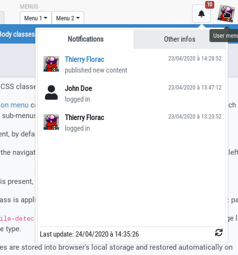

MyAMS allows to display a "notifications" box, displayed at the top right of the main application window.

MyAMS provides a simple template, but you can override it if required, or don't include this feature in your main templare:
<div id="user-notifications" class="ml-1"
data-ams-events-handlers='{"show.bs.dropdown": "MyAMS.notifications.getNotifications"}'
data-ams-events-options='{"localTimestamp": "true"}'
data-ams-notifications-target="#notifications-pane"
data-ams-notifications-source="data/user-notifications.json">
<a href="#" class="btn btn-light pt-2"
data-toggle="dropdown" data-offset="36,7">
<i class="fa fa-bell hint" title="Notifications"
data-placement="bottom" data-offset="0,10"></i>
<b id="notifications-count" data-content="10"
class="badge bg-danger text-white">10</b>
</a>
<div class="dropdown-menu dropdown-menu-right p-1"
data-ams-click-dismiss="false">
<div class="position-relative d-flex flex-column h-100">
<ul class="nav nav-tabs nav-fill">
<li class="nav-item">
<a href="#notifications-pane" class="nav-link active"
data-toggle="tab"
data-ams-events-handlers='{"show.bs.tab": "MyAMS.notifications.getNotifications"}'
data-ams-events-options='{"localTimestamp": "true"}'>
Notifications
</a>
</li>
<li class="nav-item">
<a href="#info-pane" class="nav-link"
data-toggle="tab">Other infos</a>
</li>
</ul>
<div class="tab-content flex-grow-1 overflow-hidden p-1 pt-2 border">
<div class="tab-pane d-flex flex-column overflow-hidden h-100 fade show active"
id="notifications-pane">
<!-- dynamic content -->
</div>
<div class="tab-pane d-flex flex-column h-100 fade"
id="info-pane">
User info
</div>
</div>
</div>
</div>
</div>
Don't forget to include overflow-* and flex-* CSS classes
to get a good layout!
A badge is added to the notifications button; its data-content attribute,
which may match the tag text, can be used to automatically hide the badge when it's value
is "0".
In this configuration, notifications are downloaded from a JSON URL defined into
data-ams-notifications-source attribute, and stored into an element
defined by data-ams-notifications-target; the
MyAMS.notifications.getNotifications function is called, when the dropdown is
opened but also when the tab pane is activated, to download JSON file and generate
notifications panel content, so don't forget to include the notifications
module if you use MyAMS core bundle.
The JSON file is built like this:
{
"timestamp": 1587644933164.823,
"notifications": [
{
"timestamp": 1587644932164.823,
"source": {
"title": "Thierry Florac",
"id": "user.id",
"avatar": "resources/img/profile.png"
},
"host": "localhost",
"title": "Content published",
"message": "published new content",
"url": "#layout.html"
},
{
...
}
]
}
timestamp: timestamp in Javascript format, which is the date at which
the JSON content was generated; if the localTimestamp option is set to
true in the HTML template, a locally generated timestamp will be
displayed instead of the one included in the JSON file.
notifications.timestamp: a specific timestamp is associated with each
entry.
notifications.status: if used, this attribute is used to set item
background color.
notifications.source: this object is describing the "source" of the event; the only
mandatory attribute is title; if an avatar attribute is
present, it may be an URL pointing to a 32x32 pixels image, otherwise a generic user
icon will be used.
notifications.message: this is the "main" notification message
notifications.url: if this attribute is present, a link will be added on the
notification item to this URL.
Other attributes can be added to notifications file, but they will not be used by MyAMS default implementation.